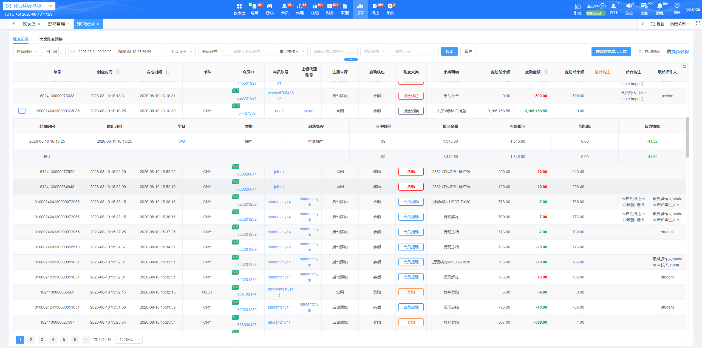
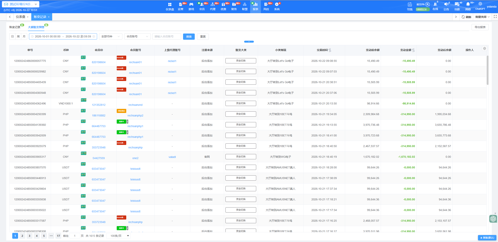

账变记录
一、功能模块：
- 功能说明：主要用于记录所有会员的交易记录
- 搜索说明：可根据单一条件或组合查询对应的帐变记录（仅支持精准搜索）
- 导出报表：针对会员的全部账变记录导出excel
- 前端数据展示天数：可设置客户端相关报表页面可查询的天数最大值
- 账变记录分平台查看：帐变详情展开后, 支持点击平台名称并跳转至投注详情页面, 方便查看该段时间注单内容

二、字段说明：
- 详情按钮：针对资金切换(转出)数据增加详情按钮功能, 点击可查看该笔记录时间段的投注统计明细, 包含起始/截止时间、平台、游戏名称、注单数量、投注金额、有效投注、预扣税以及总计。
- 单号：每笔账变记录系统自动生成的16位数唯一验证单号
- 交易时间：账变记录产生的时间记录, 点击排序箭头自动倒序/顺序排序
- 币种：产生该笔账变的对应币种
- 会员账号：玩家的账号(英文+字母组合)
- 会员ID：点击弹出会员概览，可查看会员相关信息。
- 上级代理账号：该玩家的上级代理账号
- 上级代理ID: 该玩家的上级代理ID (默认不展示, 需从自定义列功能开启)
- 顶层代理账号: 该玩家的顶层代理账号 (默认不展示, 需从自定义列功能开启)
- 顶层代理ID: 该玩家的顶层代理ID (默认不展示, 需从自定义列功能开启)
- 注册来源：玩家首次注册账号时所属来源
- 变动钱包:上分/充值/奖励领取等进入的钱包类型
- 账变大类：账变记录的大类型，共计15个大类（资金切换、会员充值、会员提现、银商结算、资金修正、活动、返水、返佣、利息宝、任务、VIP奖励、充值优惠、俱乐部、奖励、公积金）
- 小类明细：账变记录大类型中包含的小类（不依次举例说明）
- 变动前余额：该条账变记录产生之前的玩家账户余额
- 变动金额：该条账变记录产生时，变动的金额数, 点击排序箭头自动倒序/顺序排序
- 变动后余额：该条账变记录产生之后的玩家账户余额
- 前台备注：客户端页面操作的备注信息
- 最后操作人：后台管理员操作之后的日志记录操作人账号
- 后台备注：后台页面操作的备注信息
- 前台备注人: 客户端页面操作备注的操作人账号 (默认不展示, 需从自定义列功能开启)
- 后台备注人: 后台页面操作备注的操错人账号 (默认不展示, 需从自定义列功能开启)
- 审核人: 提现订单及充值订单的审核人资讯 (默认不展示, 需从自定义列功能开启)
- 出款人: 提现订单的出款人资讯 (默认不展示, 需从自定义列功能开启)
- 创建人: 创建此帐变记录的操作人帐号 (默认不展示, 需从自定义列功能开启)
三、数据汇总：
当搜索会员帐变数据时, 页面顶部会展示数据汇总资讯, 包含以下内容: 充值、提现、优惠、人工加款、手动扣款
大额账变预警

一、功能说明：大额账变预警用于记录及查询触发“会员大额带入三方预警”条件的相关数据，方便业主快速定位会员进入第三方游戏时的大额带入异常记录。
二、进入路径：站点后台 → 报表 → 账变记录 → 大额账变预警。
三、产生预警的条件：会员进入第三方游戏时，若带入金额达到会员第三方游戏带入上限的预警门槛，系统会生成一笔异常账变记录，并展示在大额账变预警页面。
四、搜索项：
- 交易时间
- 品牌（多品牌站点才展示）
- 币种（多币种站点才展示）
- 会员账号、会员ID
- VIP等级、会员标签
- 单号
- 注册来源
- 上级代理账号、上级代理ID
- 顶层代理账号、顶层代理ID
五、列表字段：
默认展示：品牌ID（多品牌站点才展示）、单号、币种（多币种站点才展示）、会员ID、会员账号、上级代理账号、注册来源、账变大类、小类明细、交易时间、变动前余额、变动金额、变动后余额、操作人。
其中，会员ID带VIP等级标签，点击会员ID可跳转会员概览页；会员账号带会员标签，点击会员账号可跳转会员概览页；点击上级代理账号可跳转至代理 → 所有代理，并带入对应账号查询；交易时间和变动金额支持排序，变动金额以粗体展示。
默认隐藏：上级代理ID、顶层代理账号、顶层代理ID。可通过自定义列查看。
六、导出报表：导出内容包含品牌ID（多品牌站点才展示）、单号、交易时间、币种（多币种站点才展示）、会员ID、会员账号、VIP等级、会员标签、上级代理ID、上级代理账号、顶层代理ID、顶层代理账号、注册来源、账变大类、小类明细、变动前余额、变动金额、变动后余额及操作人。
七、消息提醒：进入大额账变预警页面后，会清空消息中的“大额用户进入三方”气泡数量。消息数量根据首次查询时间戳统计；未查询时，按近7天数据计算。